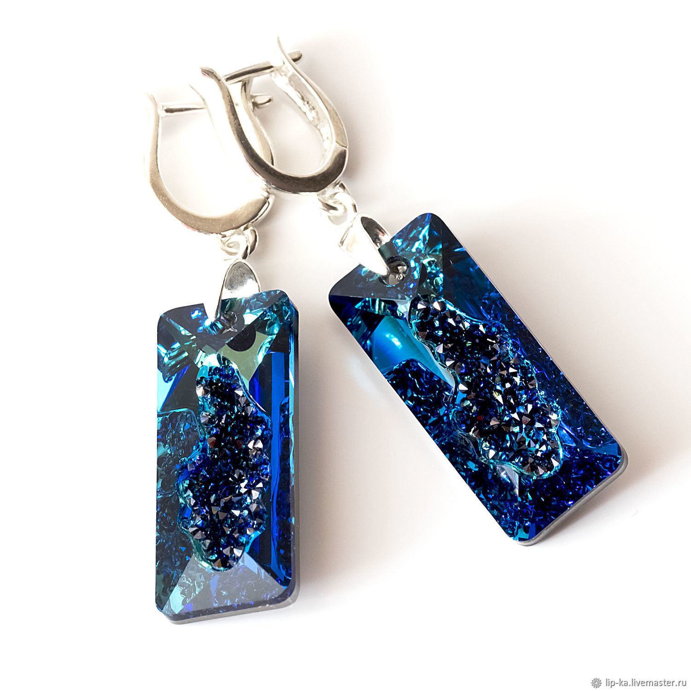
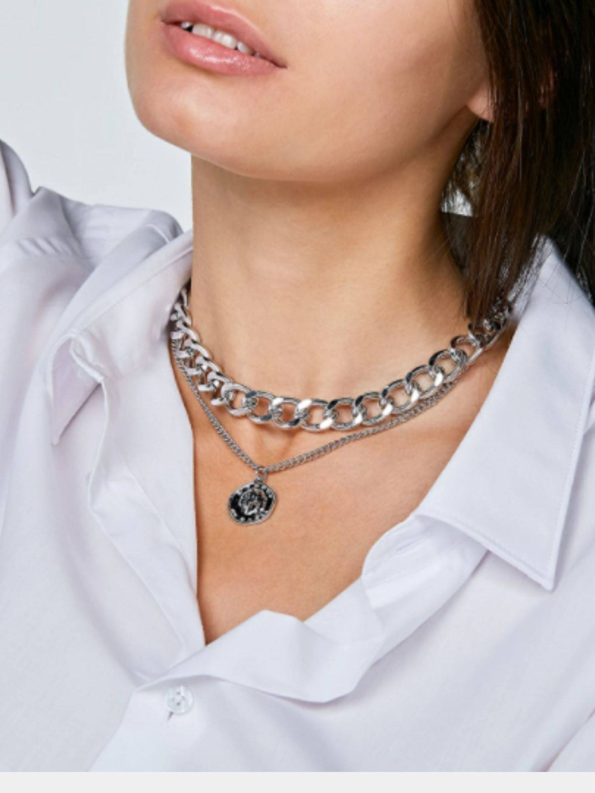

Что такое бижутерия?
Украшение — это нечто, призванное украшать и оживлять наши образы. У большинства людей это слово ассоциируется с ювелиркой. Но на этом его значение не исчерпывается, ведь элегантные украшения могут создаваться не только из благородных металлов и драгоценных камней, но и из более доступных материалов: бижутерных сплавов, поделочных камней, бисера, керамики, бусин, кожи, кости и так далее. Слово «бижутерия» пришло к нам из французского языка и в буквальном переводе означает «торговля украшениями». В нем нет ни малейшего намека на дешевизну и фальшивку. Бижутерия с блеском сочетается со всеми луками, от повседневных до вечерних, для чего, собственно, и нужны украшения. Она оживляет образы, и при правильном использовании выглядит не менее респектабельно, чем ювелирка.
Символы и значение украшений очень многообразны: с их помощью можно передать не только собственное мировоззрение в принципе, но и просто сегодняшнее настроение. С этой задачей бижутерия справляется куда лучше, чем дорогостоящая ювелирка.
Чем бижутерия отличается от ювелирных изделий?
К бижутерии относятся все украшения, созданные не из золота, серебра и металлов платиновой группы. Она куда более многообразна, чем ювелирка, что дает широчайшее поле для дизайнерских экспериментов.
Немного истории
История украшений началась еще на заре человечества: модницы каменного века тоже хотели выглядеть привлекательно в глазах других членов племени. Археологи нашли массу доказательств этой гипотезе.
В ходе раскопок на стоянке неандертальцев нашли когти орла с отверстиями, которые явно носили на шнурке. Этим древнейшим украшениям около 135 тысяч лет!
В Израиле, в пещере Схул, обнаружили ракушки с дырочками, которые наши предки просверлили свыше 110 тысяч лет назад. А на Алтае обнаружили останки каменного браслета, созданного по технологии, которой, по всем научным выкладкам, 40 тысяч лет назад не существовало!
Как видите, история бижутерии началась гораздо раньше, чем люди научились обрабатывать металлы. И с наступлением бронзового, а затем железного века, она не прекратилась!